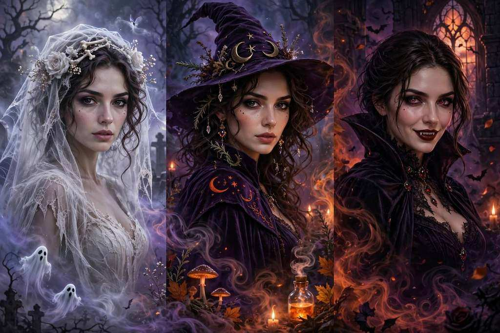

Upload one photo — no prompt needed. Get your tiptoe dance with that old-film fairy-tale atmosphere.
Make your tiptoe video Watch the referencesFrom $4.99 · one-time credits · no subscription
A clear photo of one person, waist-up or full-body, with even lighting.
9:16 for your feed or 16:9 for the film look. 3–15 seconds at 720p, 1080p or 4K.
Track it in My videos, download the MP4. Confirmed failures return credits.
The tiptoe, the theatrical pause, the lantern-lit barn — references, not generated results.
16:9 / 10 sec
Trend reference
Trend reference
20 credits
80 credits
200 credits
Is the Rumpelstiltskin 1987 video real?
The viral tiptoe clip is AI-generated. A real film called Rumpelstiltskin was released in 1987, but the dancing clip is not a scene from it.
What's the song?
The meme is often paired with Riff Raff's Tip Toe Wing In My Jawwdinz. Generated videos are silent — add music you're allowed to use.
Can I post it on TikTok or YouTube?
Use photos and music you have permission to publish, label AI content with the platform's disclosure controls, and don't present it as genuine historical footage.